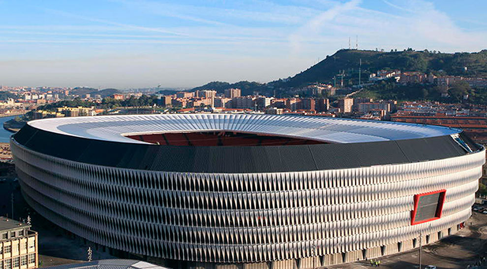
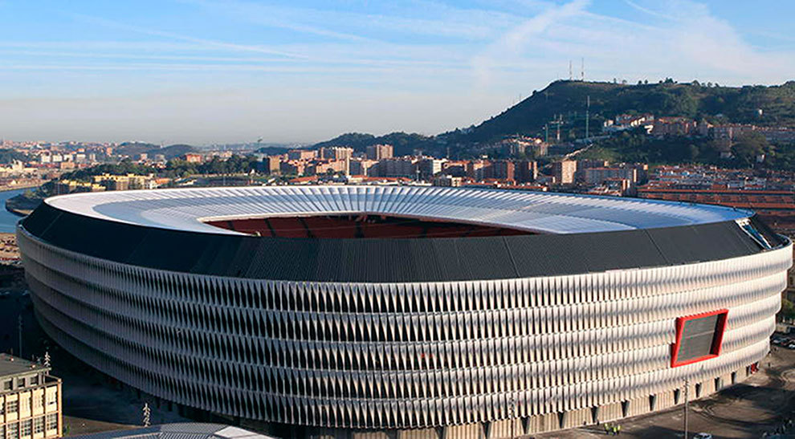

Estadio San Mamés
El Estadio San Mamés, conocido cariñosamente como "La Catedral", es el hogar del Athletic Club de Bilbao y uno de los estadios más emblemáticos del fútbol español. Ubicado en la ciudad de Bilbao, en el País Vasco, este estadio ha sido testigo de innumerables momentos históricos en el deporte rey.
Inaugurado en 2013, el nuevo San Mamés reemplazó al antiguo estadio del mismo nombre, que había sido la casa del Athletic Club durante más de un siglo. El diseño moderno del nuevo estadio mantiene la esencia y el espíritu del antiguo, con capacidad para albergar a más de 50,000 espectadores.
El Estadio San Mamés se destaca por su arquitectura innovadora y su atmósfera única. Su diseño incluye una fachada exterior distintiva compuesta por paneles de acero y vidrio, que reflejan la luz de manera impresionante durante el día y se iluminan de manera espectacular por la noche.
En cuanto a su interior, San Mamés ofrece una experiencia de espectador excepcional, con asientos cómodos y una excelente visibilidad desde todas las áreas del estadio. La pasión y el fervor de la afición del Athletic Club son palpables en cada partido, creando una atmósfera electrizante que hace que cada visita al estadio sea inolvidable.
Además de albergar los partidos del Athletic Club, San Mamés ha sido sede de varios eventos deportivos de renombre, incluidos partidos internacionales y finales de copas nacionales. Su reputación como uno de los estadios más icónicos de España continúa creciendo, y sigue siendo un destino imprescindible para los aficionados al fútbol de todo el mundo.
 
